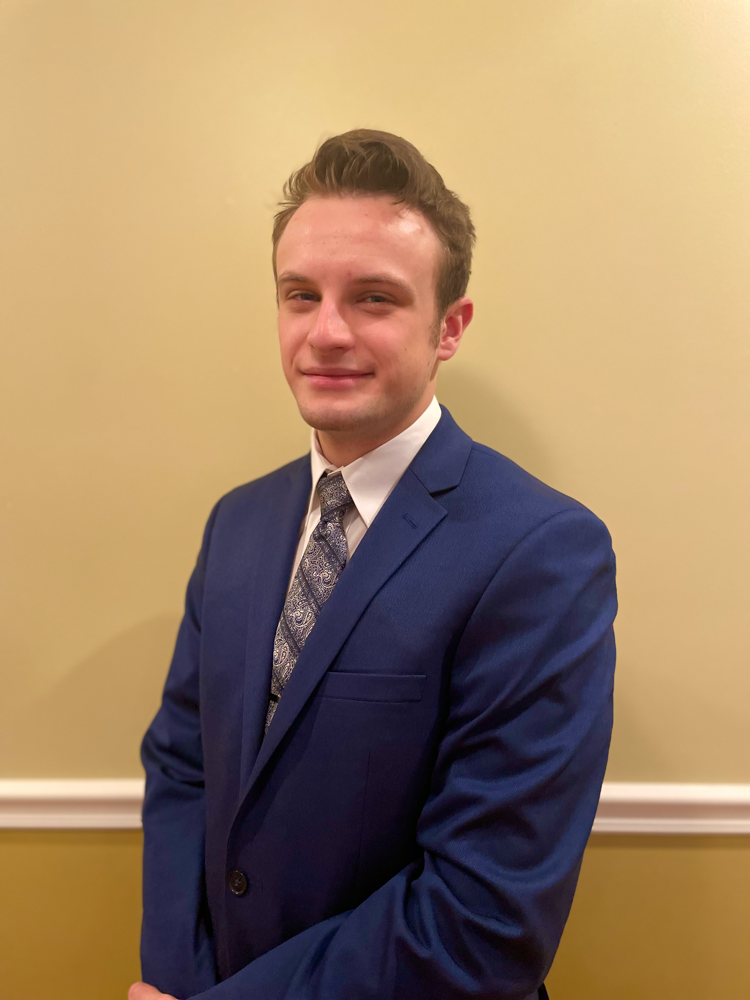

About Me:
I am a Computer Science student at Illinois Institute of Technology and I am currently pursuing a co-terminal degree in Computer Science. I will be graduating in Spring 2023 with both my bachelors degree and my Master's Degree.
In addition to that, I am a martial arts instructor at Elmhurst Tang Soo Do where I have taught since 2019, as well as teaching at IIT through volunteering. While teaching I work with many students of all ages in order to help them learn their techniques while they progress through their different ranks. This is often done by providing additional assistance outside of the regularly scheduled class times.
Also, I am currently the Vice President of the IIT chapter of Young Americans for Liberty, and have been since 2020. In this role I help the president in recruiting events, help organize and facilitate meetings, and record meeting notes for exec board meetings.
Interests:
As mentioned above, I am a Computer Science student and I have an interest in computer hardware and software. I enjoy programming and writing software. I also would like to work on putting together a desktop PC that is strong enough to handle playing modern video games well.
Also as mentioned above, I am also a third-degree black belt in Tang Soo Do. I enjoy both practicing self-improvemnt through training as well as helping others through training them. I have been practicing karate since I was very young, since I was about 4-5 years old.
I am music enthusiast with a large interest in vinyl as well as classic vinyl. I enjoy collecting and listening to vinyl primarily from the 70's and 80's. I enjoy exploring different types of audio output devices such as headphones, earbuds, and speakers to see which provide an experience I enjoy the most. I also played percussion till college including playing in concert band, jazz lab band, and drumline (both indoor and outdoor), but I am looking to get back into playing drumset when I can afford a good drumset.
I enjoy cooking at home and exploring how to make food taste the best. I am especially interested in cooking with gills such as charcoal grills, gas grills, and smokers. I am interested in trying to figure out how to combine different types of wood with different cuts of meat to produce the best barbecue. I also have an interest in the different types of knives and the different techniques behind sharpening them.